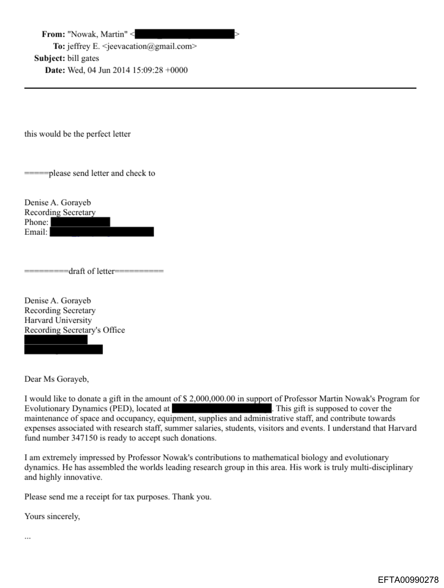

The email
Martin Nowak sends Jeffrey Epstein a Harvard PED/Fund 347150 template record. The subject line reads
bill gates.
Trail Two
The Harvard/Falconwood lane centers a Harvard PED/Fund 347150 template record sent from Martin Nowak to
Jeffrey Epstein with the subject line bill gates and a $2,000,000 draft-letter context.
What the files show
Martin Nowak sends Jeffrey Epstein a Harvard PED/Fund 347150 template record. The subject line reads
bill gates.
The draft letter asks for a $2,000,000 gift in support of Professor Martin Nowak's Program for Evolutionary Dynamics at Harvard, tied to Fund 347150.
Document trail
Martin Nowak sends Epstein the Harvard PED/Fund 347150 template record.
The email subject is bill gates, placing Gates-related language directly on the Harvard record.
The draft letter language names a $2,000,000 gift for Nowak's Program for Evolutionary Dynamics at Harvard.
Source record

Download